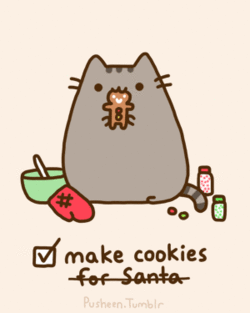
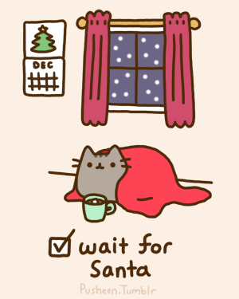
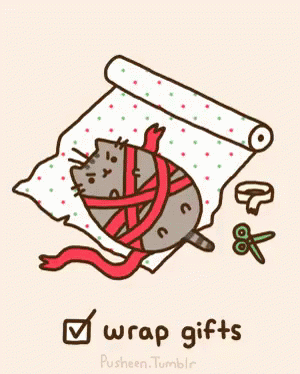
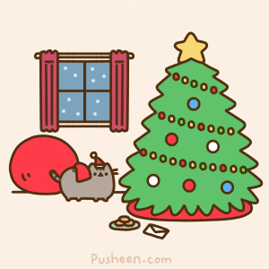

Day 62
Reading
- You'll be reading some Christmas stories. As promised, no questions on the stories. Enjoy!
- Today's Christmas story: Christmas Day in the Morning by Pearl S. Buck.
Words of the Day:
Write the two words below in your vocabulary book along with their short definitions. Also, click on the link for each word, and read more about the definition.
Writing
- Review: Personification means giving human traits, such as feelings and thoughts, to objects.
- Write a page about the following topic: Personify your Christmas tree. Write a story from the Christmas tree’s point of view.
Math
Remember to pause the videos, and take notes.
- Decomposing a fraction visually: Watch
- Decomposing a mixed number: Watch
- Decompose fractions: Practice
- Decomposing fractions review: Read
Art
- Draw using the instructions in these videos on how to draw:
- Tip: Remember that using a sharpie directly is tough because you can't erase mistakes. Use pencil to draw the outline first, then go over the lines with sharpie.

Day 63
Reading
Today's Christmas story: The Adventure of the Blue Carbuncle by Sir Arthur Conan Doyle.
Words of the Day:
Write the two words below in your vocabulary book along with their short definitions. Also, click on the link for each word, and read more about the definition.
- umbrage - a feeling of anger caused by being offended
- venerable - profoundly honored
Grammar
Titles & Quotation Marks - Review
- Brain Quest: p. 42 My Favorite Things (Titles)
- If you don't have a personal "Top 5" in any category, just put down any entry to fill the list.
- You can check your entries (or any capitalized title) here. Don't worry-- it's a secure site!
- Brain Quest, p. 43 The Flip (Quotation Marks)
Math
Remember to pause the videos, and take notes.
- Adding fractions with like denominators: Watch
- Add fractions with common denominators: Practice
- Adding fractions (common denominators): Complete this worksheet.
Social Studies
- Visit this site to learn more about the presidents of the United States.
- This week, learn about the thirty-sixth (Lyndon B. Johnson) through the thirty-ninth president (James Carter) only.
- A copy of the text for each president is in your folder.

Day 64
Reading
Today's Christmas story: A Kidnapped Santa Claus by L. Frank Baum.
Words of the Day:
Write the two words below in your vocabulary book along with their short definitions. Also, click on the link for each word, and read more about the definition.
- vex - disturb, especially by minor irritations
- vociferous - conspicuously and offensively loud
- zenith - the high point
Math
Remember to pause the videos, and take notes.
- Subtracting fractions with like denominators: Watch
- Subtract fractions with common denominators: Practice
- Subtracting fractions (common denominators): Complete this worksheet.
Day 65
Reading
Today's Christmas story: A Christmas Memory by Truman Capote.
Words of the Day:
Write the two words below in your vocabulary book along with their short definitions. Also, click on the link for each word, and read more about the definition.
- Review the 100 words you have learned so far this year.
- Take a practice quiz.
- Be sure that you are logged in first.
Math
Remember to pause the videos, and take notes.
- Adding mixed numbers with like denominators: Watch
- Subtracting mixed numbers with like denominators: Watch
- Add and subtract mixed numbers (no regrouping): Practice
Science
Remember to pause the videos, and take notes.
- The RNA enigma: Watch
- The RNA engima quiz: Practice
- RNA Building Blocks: Read
- Protein synthesis in the cellular factory: Watch
- Protein synthesis in the cellular factory quiz: Practice
- Protein synthesis: Read
- The RNA origin of life: Watch
- The RNA origin of life quiz: Practice
- RNA world: Read
- Virus wars: Watch
- Virus wars quiz: Practice
- Viruses: Read
- Click here to learn how to deal with viruses.
Day 66
Reading
Read this short story: The Greatest Gift by Philip Van Doren Stern.
Writing
Write a page about the following topic: Think about Christmas six years ago. How was your life different then? How is it the same?
Words of the Day:
Write the two words below in your vocabulary book along with their short definitions. Also, click on the link for each word, and read more about the definition.
- If you need to do so again: Review the 100 words you have learned so far this year.
- Take a practice spelling quiz.
- Be sure that you are logged in first.
Math
Play: Christmas Lights Holiday Game!
History
Watch: The History of Christmas.